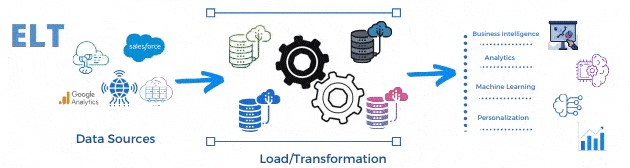
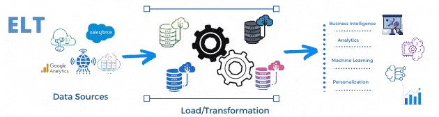

Data Engineer
Crea Datapipelines
Es una serie de pasos de procesamiento de datos. Si los datos no se cargan directamente en la plataforma de datos, se ingieren al comienzo del pipeline. Luego, hay una serie de pasos en los que cada paso entrega una salida, que es la entrada al siguiente paso. Esto continúa hasta que se completa el pipeline.
Para comprender cómo funciona un data pipeline, piensa en cualquier pipeline que reciba algo de una fuente y lo lleve a un destino. Lo que sucede con los datos a lo largo del camino depende del caso de uso comercial y del destino en sí. Un data pipeline puede ser un proceso simple de extracción y carga de datos, o puede estar diseñado para manejar datos de una manera más avanzada, como entrenar conjuntos de datos para el aprendizaje automático. Los elementos del data pipeline son:
Fuente: Pueden incluir bases de datos relacionales y datos de aplicaciones SaaS. La mayoría de los pipelines ingieren datos sin procesar de varias fuentes a través de un mecanismo de ingesta, una llamada a la API, un motor de replicación que extrae datos a intervalos regulares o un webhook. Además, los datos se pueden sincronizar en tiempo real o en intervalos programados.
Destino: un destino puede ser un Data Warehouse, local o basado en la nube, un Data Lake o Data Mart, o puede ser una aplicación de análisis o BI.
Transformación: Refiere a las operaciones que cambian los datos, estas son: estandarización, clasificación, deduplicación, validación y verificación de datos. El objetivo final es posibilitar el análisis de los datos.
Procesamiento: hay dos modelos de ingesta de datos: procesamiento por lotes (batch), en el que los datos de origen se recopilan periódicamente y se envían al sistema de destino, y procesamiento de flujo (stream), en el que los datos se obtienen, manipulan y cargan tan pronto como se crean.
Flujo de trabajo: Implica la gestión de la secuencia y la dependencia de los procesos. Las dependencias del flujo de trabajo pueden ser técnicas o comerciales.
Supervisión: Los data pipelines deben tener un componente de supervisión para garantizar la integridad de los datos. Los posibles escenarios de falla incluyen la congestión de la red o un origen o destino fuera de línea. El pipeline debe incluir un mecanismo que alerta a los administradores sobre tales escenarios.
Integra
 Arquitectura Big Data
Arquitectura Big Data
Las arquitecturas de data pipeline requieren muchas consideraciones. Por ejemplo, ¿su pipeline necesita manejar datos de transmisión? ¿Qué tasa de datos espera? ¿Cuánto y qué tipos de procesamiento deben ocurrir en el data pipeline? ¿Los datos se generan en la nube o on premise y adónde deben ir? ¿Planea construir el pipeline con microservicios? ¿Existen tecnologías específicas en las que su equipo ya esté bien versado en programación y mantenimiento?
Hace varios años, las empresas solían tener aplicaciones en línea respaldadas por una base de datos relacional que se usaba para almacenar usuarios y otros datos estructurados (OLTP). De la noche a la mañana, estos datos se archivaron utilizando trabajos complejos en un Data Warehouse optimizado para el análisis de datos y la inteligencia empresarial, OLAP. Los datos históricos se copiaron en el Data Warehouse con los que se generaron informes que se utilizaron para tomar decisiones comerciales. Para OLTP, en los últimos años, hubo un cambio hacia NoSQL, utilizando bases de datos como MongoDB o Cassandra que podrían escalar más allá de las limitaciones de las bases de datos SQL. Sin embargo, las bases de datos recientes pueden manejar grandes cantidades de datos y se pueden usar tanto para OLTP como para OLAP, y hacerlo a un bajo costo tanto para el procesamiento de flujo (Streaming) como por lotes (Batch).
El procesamiento por lotes o Batch es donde ocurre el procesamiento de bloques de datos que ya se han almacenado durante un período de tiempo. Funciona bien en situaciones en las que no necesita resultados de análisis en tiempo real y cuando es más importante procesar grandes volúmenes de datos para obtener información más detallada que para obtener resultados de análisis rápidos.
El procesamiento Streaming permite procesar datos en tiempo real a medida que llegan y detectar rápidamente las condiciones en un período de tiempo reducido desde el punto de recepción de los datos. Permite introducir datos en herramientas de análisis tan pronto como se generen y obtener resultados de análisis instantáneos.
Usa ETL y ELT
 ELT con MS Azure

ELT Data pipeline.
ELT con MS Azure

ELT Data pipeline.
ETL se refiere a un tipo específico de data pipeline. ETL significa "extraer, transformar, cargar". Es el proceso de mover datos desde una fuente, como una aplicación, a un destino, generalmente un Data Warehouse. "Extraer" se refiere a extraer datos de una fuente; "Transformar" se trata de modificar los datos para que se puedan cargar en el destino, y "cargar" se trata de insertar los datos en el destino.
ETL se ha utilizado históricamente para cargas de trabajos Batch, especialmente a gran escala. Pero una nueva generación de herramientas ETL Streaming está surgiendo como parte del proceso de transmisión de datos de eventos en tiempo real.
Los Data Warehouse basados en la nube, como Amazon Redshift, Google BigQuery, Azure SQL Data Warehouse y Snowflake pueden escalar hacia arriba y hacia abajo en segundos o minutos, por lo que los desarrolladores pueden replicar datos sin procesar de fuentes dispares y definir transformaciones en SQL y ejecutarlas en el Data Warehouse después de la carga o en el momento de la consulta.
Extraer, Cargar y Transformar, ELT, extrae de manera similar datos de una o varias fuentes remotas, pero luego los carga en el Data Warehouse de destino sin ningún otro formato. La transformación de datos, en un proceso ELT, ocurre dentro de la base de datos de destino. ELT pide menos a las fuentes remotas, requiriendo solo sus datos brutos y no preparados.
La elección de ETL o ELT para un caso de uso de gestión de datos depende principalmente de tres factores: las tecnologías de almacenamiento principales, la arquitectura de almacenamiento de datos y la aplicación de almacenamiento de datos para el negocio. La principal ventaja de usar un enfoque ELT es que se pueden mover todos los datos sin procesar de una multitud de fuentes a un único repositorio unificado (Data Lake) y tener acceso ilimitado a todos los datos en cualquier momento. Se puede trabajar de forma más flexible y facilita el almacenamiento de datos nuevos y no estructurados. En general, ELT es un proceso económico, ya que requiere menos recursos y menos tiempo para consultas. Sin embargo, si el sistema de destino no es lo suficientemente robusto para ELT, ETL será una opción más adecuada.